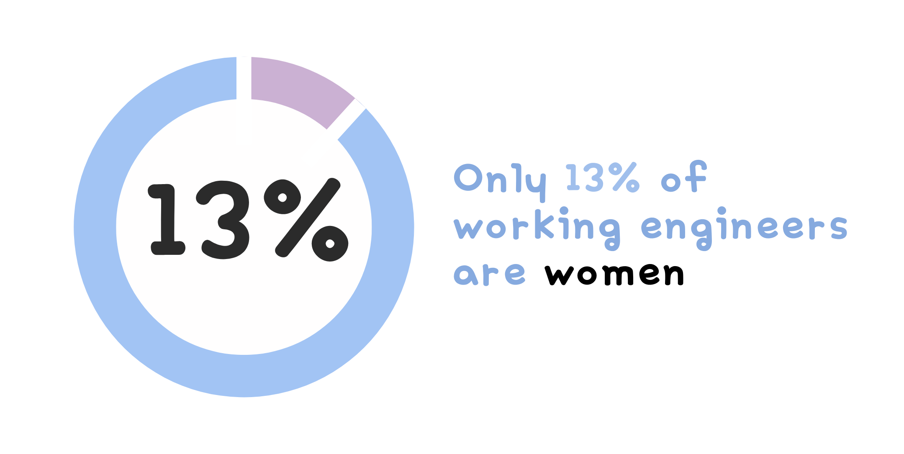

What is
Engineering?
Engineering combines the fields of science and mathematics to solve real world problems that improve the world around us. Engineers are problem solvers, organizers, communicators, calculators and designers. They are capable of clearly defining a problem and its relevant constraints and providing a simple solution. Engineering is a broad discipline that is often broken down into several sub-disciplines such as chemical engineering, civil engineering, electrical engineering, mechanical engineering, bioengineering, aerospace engineering, and more.
Trailblazing Women in Engineering
HELEN BLANCHARD
Helen was one of the great inventors of the early industrial era. Her most famous creation was the zigzag sewing machine, patented in 1873, which revolutionized garment durability by sealing seam edges. This invention is now part of the Smithsonian Museum of American History collection. Helen was reknowned for her inventions in sewing technology.
JUDITH RESNIK
Judith was the first female Jewish astronaut. During her training, she developed software and procedures for NASA missions. Her expertise extended to Navy missile and radar projects and biomedical engineering research at the NIH. She died in the 1986 Challenger mission. The "Judith Resnik Award in Engineering" was named in her honor.
EDITH CLARKE
Edith was the first female electrical engineer to be employed in the United States. She invented the Clarke calculator, a device could solve line equations involving hyperbolic functions ten times faster than previous methods. In 1947, she made history again as the first female professor of electrical engineering in America at UT Austin.
BEATRICE HICKS
Beatrice was the first president of the Society of Women Engineers. She diligently supported women in engineering throughout her career. She studied chemical engineering then went to work for Western Electric, as the first woman to be hired as an engineer in the company. There, Beatrice worked on telephone and aircraft communication technology.
Programs You Can Join

Engineering Fun
Bored? Click to generate an engineering
project you can do at home